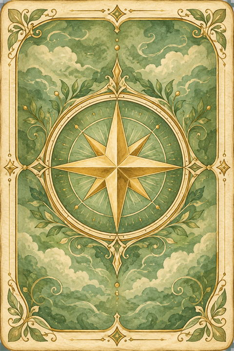
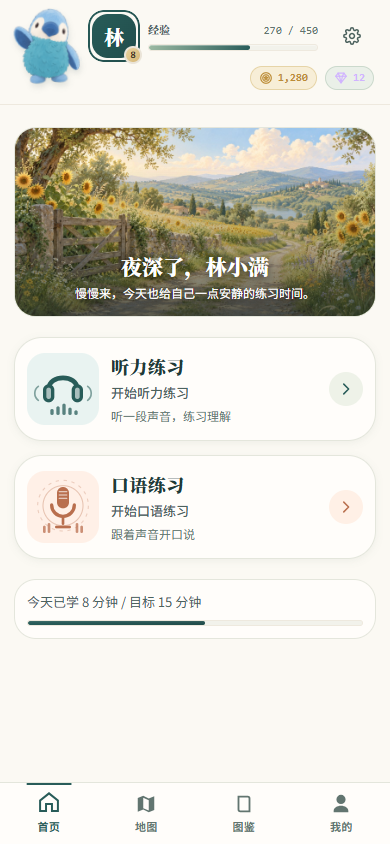
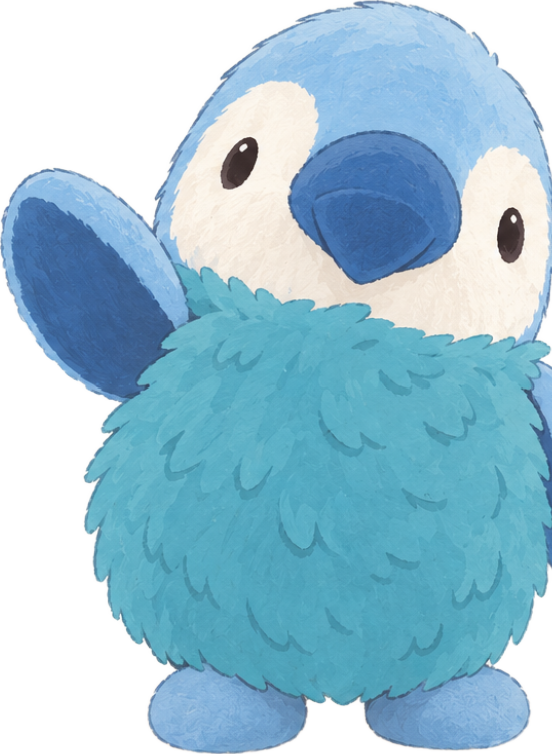
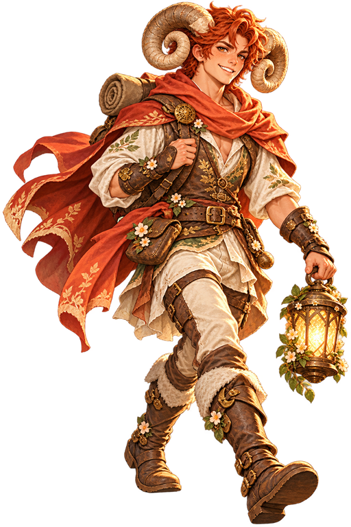

你的下一段旅程，藏在这里探索三张地图
EXPLORE
一关一关，走出自己的路线
选择材料，完成练习，查看星级与通关进度。
下一步在哪里，打开地图就知道。
A LITTLE PRACTICE. A LITTLE ADVENTURE.
和一只蓝色小鸡一起，把英语练成日常的小冒险。
听一段、说几句，再解锁下一段旅程。
听力 + 口语 短练习，随时开始 浏览器就能用



01 / LISTEN WITH A METHOD
先抓住意思，再听清细节，最后对照原文。
把「好像听懂了」变成一次有反馈的练习。
右侧可体验一个简化示例
Campus Library Renovation · 四级路线首篇
先听一听：图书馆将关闭多久？
点击播放，试着抓住这个信息。
点选词块，把首句拼回来。
The city university will fix its main library next year. It will be closed for one year, starting next summer.这所市立大学明年将修缮主图书馆。图书馆从明年夏天起将关闭一年。
抓住关键信息，再听听它是怎么说的。
示例使用产品现有原音 · 此处展示部分练习流程
A little practice.
A little more confidence.
功能示意
02 / FIND YOUR VOICE
听过的材料，也可以拿来开口练。
从逐句跟读到影子跟读，慢慢靠近原音的节奏。
看字幕、听原音，再用自己的声音说一遍。
把自己的声音和原音对照，听见具体的差别。
选择合适的语速，练习连续表达与句子节奏。
03 / MAKE PROGRESS FEEL LIKE PLAY
有路线可走，有成长可看。
一次练习的结束，也可以是下一段冒险的开始。
选择材料，完成练习，查看星级与通关进度。
下一步在哪里，打开地图就知道。

星座收藏从练习中获得成长与奖励，逐步丰富图鉴。
给日复一日的坚持，留一点小纪念。
地图、卡背与藏品均使用产品原画；此处为展示排版，翻卡不会发放产品奖励。
04 / PICK YOUR NEXT QUEST
现有 300 篇原创听力材料，也用于跟读练习。
考试场景是一条选择，日常听说是持续的目标。
短新闻、对话与短文。
从校园、生活和社会话题练起。
对话、短文与讲座。
练习较长内容中的信息和观点。
生活场景、学术讨论与讲座。
接触不同口音，逐步挑战理解。
材料为原创场景练习，不是官方真题；课程内的档位与反馈不等同于考试成绩或语言能力认证。
导入音频与英文文本，逐句对齐，用熟悉的内容练听力和影子跟读。
05 / WE ARE ALL EARS
哪里用得不顺？还想练什么？
关于听说、地图或收藏，你的想法都可以告诉我们。
A FEW THINGS TO KNOW
给第一次见面的你，一点实在的说明。
先选一篇合适的听力材料，按「先听、再练、对照」完成一轮；想开口时，再用同一篇材料跟读。可以重练，按自己的节奏推进。
Lingua Quest 是移动端优先的 Web App，手机和电脑都可以通过浏览器访问。支持的浏览器还可把它添加到主屏幕；安装入口取决于浏览器与设备。
当前静态版将进度和收藏保存在使用该产品的浏览器里。刷新后可以继续，但不同设备之间不会自动同步；清除站点数据会删除本地存档。
听原音不需要麦克风；录音跟读需要你允许浏览器使用麦克风。当前静态版提供浏览器本地反馈，语音识别可用性取决于浏览器。练习反馈用于辅助对比，不作为专业发音诊断或语言水平认证。
这里是产品介绍页，只展示一段现有音频和简化练习。完整产品包含听力、口语、关卡地图、图鉴与个人学习记录。点击下方入口可以访问现有 Web App。